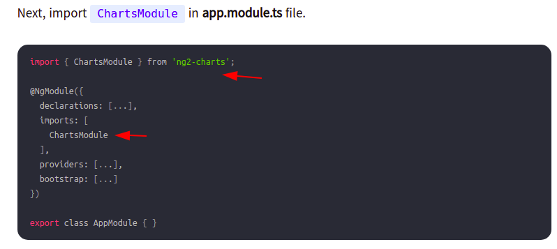
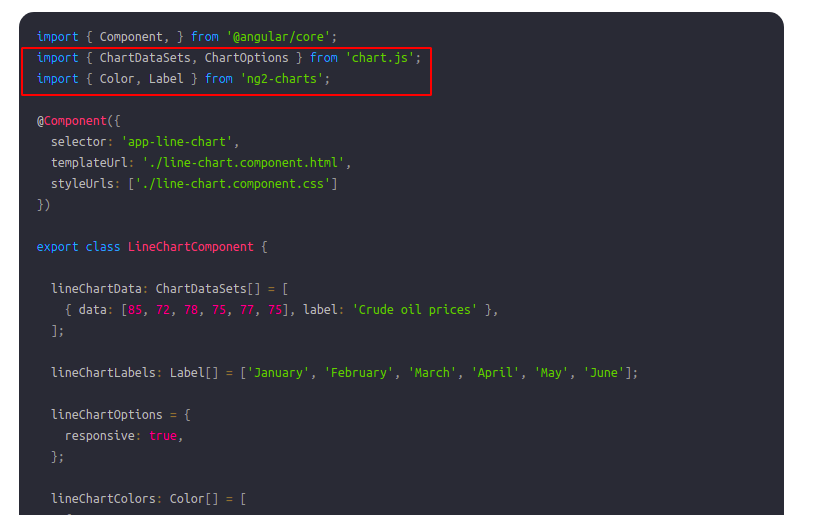
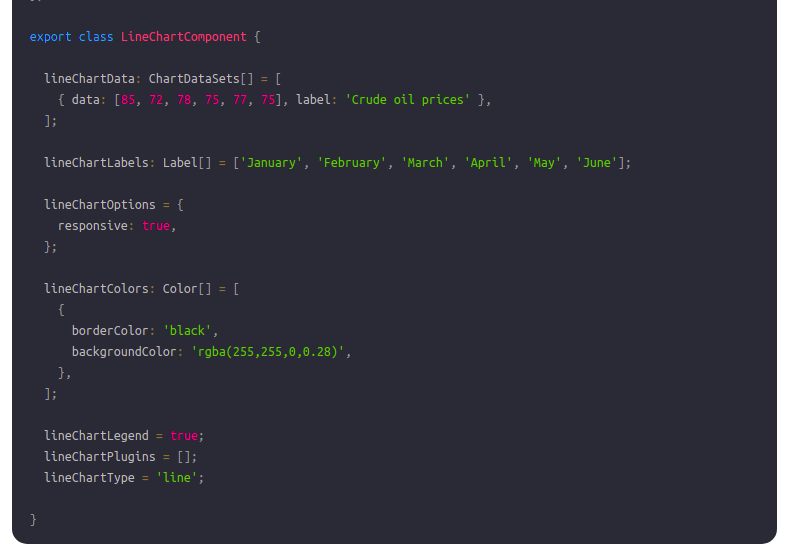
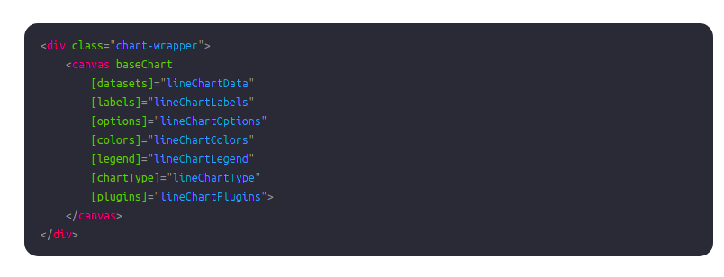
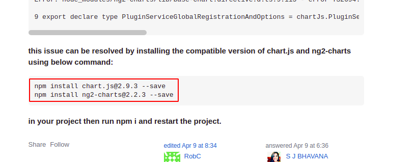

I am creating this chart with the help of a online article.
Complete Reference
Step 1: "npm install ng2-charts chart.js --save"
Step 2: Now update your app.module.ts like this

Step 3: Now move your component's ts file and import libraries like this

Step 4: Now Copy the ts code from article and paste in your ts file like this

Step 5: Now update your html file like this

Step 6: After Completion of step 5 our process is completed but i faced a problem in my .ts file
and in running angular project. problem was this ../../node_modules/chart.js/types/index.esm"' has no exported member named 'ChartDataSets'. Did you mean 'ChartDataset'?ts
After some R&D i got this issue was raised due to version mismatch of chart.js and ng2-charts with my angular cli version. You can check R&D result HERE
Step 7: After my R&D i installed again chart.js using "npm install chart.js@2.9.3 --save"
and ng2-charts using "npm install ng2-charts@2.2.3 --save" Like this

After this step my code is working well.
Note: Now our installation process is completed. For more graph and chart Click Here